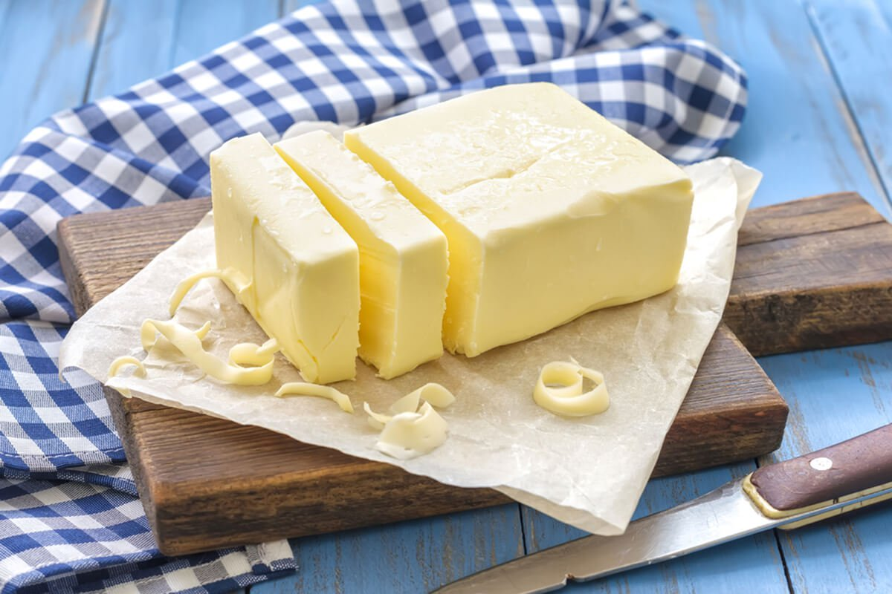
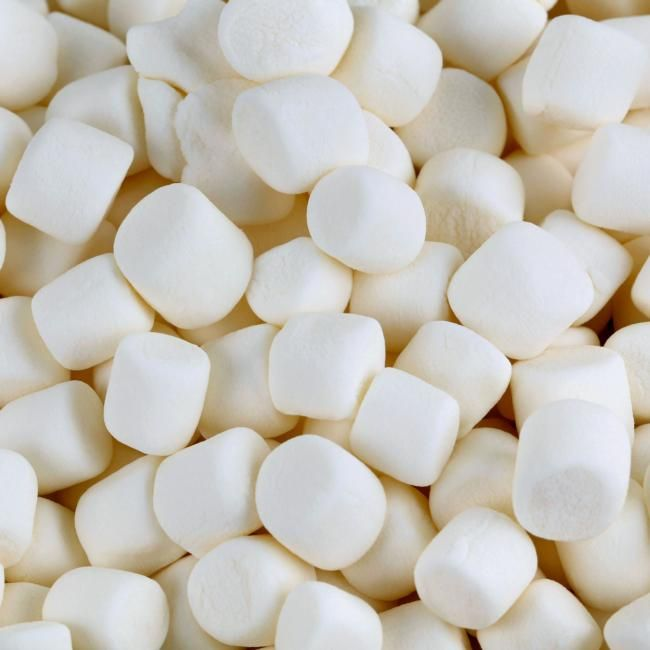
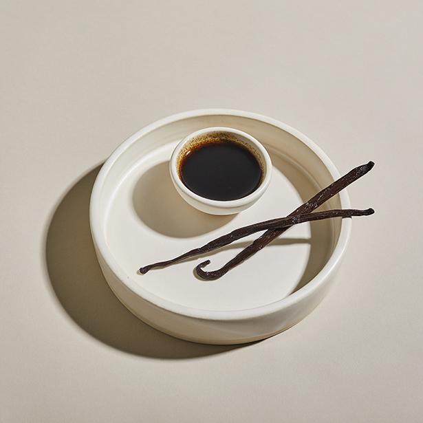
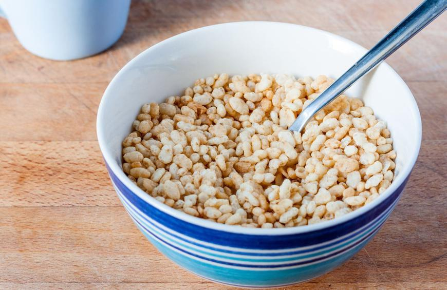

Rice Krispie Treats are a classic dessert for good reason. A simple combination of Rice Krispie cereal, butter and marshmallows are all that is needed for this easy treat (and that everyone loves)!
Chewy and gooey, they’re perfect for dessert and a great addition to lunch boxes for kids and adults alike! Most people don’t really need a recipe to make Rice Krispie Treats. This oh-so-simple goes from stovetop (or microwave) to satisfied
tummies in a flash. You only need about 15 minutes, some marshmallows, butter and, of course, Rice Krispies (but I add a small splash of vanilla too). Best of all, no baking!
Ingredients
1/4 cup butter

6 cups mini marshmallows

1 teaspoon vanilla

6 cups Rice Krispies cereal

How to Make Rice Krispie Treats
Grease a 9×13 pan (or use a smaller pan if you want a thicker bar).
Melt butter and marshmallows on the stove or in the microwave (per recipe below).
Stir in a splash of vanilla. Add the Rice Krispies and stir gently to combine.
Press gently into the greased pan and allow to cool.
Extral
Chocolate Rice Krispie Treats – Add 12oz chocolate chips to the marshmallows after melting. Stir until chocolate chips are melted.
Tips
Marshmallows
Don’t skimp on the marshmallows or your bars won’t adhere well and they won’t have a soft chewy texture.
Make sure they’re fresh.
Don’t cook the marshmallows too long, the sugars will harden.
Pan
Use a smaller pan for a thicker treat.
Grease your pan well or line with parchment paper.
Gently press the krispies into the pan, do not pack them in.
Flavors
Keep them simple by using real butter and some vanilla.